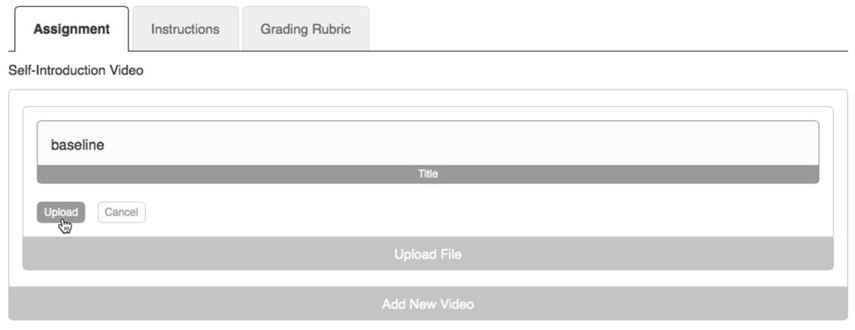

How Do I Upload My Video?
Note: If the file size of your video is over 500 MB, you will need to compress your video before you can upload it to the Coaching Companion.
To upload your video, click on the "Add New Video" bar
Next, Click on the "Browse" button, or anywhere within the "Select A File To Upload" Box.
Find and select your video, and click the "Choose" button.
Enter the name of your video using the "Title" input field, and click the "Upload" button.

Your video will now begin uploading with the progress bar informing you on the upload status.
Once your video has finished uploading, it will be encoded. This process may take up to an hour.

Note: It is important to check back to verify that your video has properly encoded!
How Do I Delete My Video?
From the page where video is located, click on the “Edit Content” button located in the upper right.
Next, click on the "Edit" bar that is located under the video.
To delete the video, click on the "delete" button.